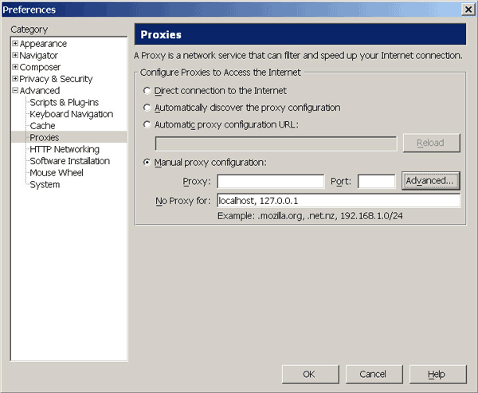
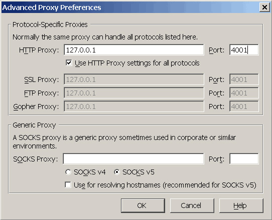

Proxy settings for browsers: SeaMonkey
JonDos suggests the preconfigured, portable JonDoFox for secure anonymous web browsing. It is availabe as complete browser (Windows) or as Firefox profile for all operating systems.
To set up JonDo for SeaMonkey, instead, do the following steps:
1.) From the menu "Edit", choose the submenu "Preferences...". The settings window will open. Unfold the "Advanced" branch and choose "Proxies". Choose "Manual proxy configuration".

If you want specify addresses where JonDo shall not be used, you can enter those exceptions into the field No Proxy for:, separated by commas.
Please note that exceptions can be managed in a more flexible way using Proxomitron.
2.) To change the proxy server, click on the "Advanced..." button. Activate "Use HTTP Proxy settings for all protocols" and enter "127.0.0.1" as the server and "4001" as the port (without the quotation marks).

We recommend to even set proxy settings on JonDo, that JonDo does not support, to avoid an accidental deanonymisation. That's the reason for choosing option "Use HTTP Proxy settings for all protocols" above.
Note: If you set a different listener port in JonDo, you'll have to enter this port here too, rather than 4001.